Installing a Microsoft 365 Copilot Center of Excellence for Higher Education
01Collect approved public sources first
Before opening PowerShell, find the organization's own published pages: responsible-AI guidance, Copilot guidance, the IT service desk, a technology-request catalog, security-incident reporting, and training resources. The links below are official university pages reviewed for this demonstration on October 20, 2026.
| Purpose | Official public source |
|---|---|
| Responsible generative AI guidance | https://genai.illinois.edu/ethical-and-responsible-use-of-generative-ai/ |
| Data handling & IP best practices | https://genai.illinois.edu/best-practice-data-handling-and-intellectual-property/ |
| Microsoft Copilot Chat guidance | https://genai.illinois.edu/ai-apps-copilot-chat/ |
| IT Service Desk | https://www.techservices.illinois.edu/get-help/it-service-desk/ |
| Technology request catalog | https://help.uillinois.edu/TDClient/42/UIUC/Requests/ServiceCatalog |
| Cybersecurity incident reporting | https://www.cybersecurity.illinois.edu/cybersecurity/report-a-cybersecurity-incident/ |
| Teaching & learning best practices | https://genai.illinois.edu/best-practices-teaching-and-learning/ |
02Separate public information from deployment settings
Keep two categories separate. Public information comes from the organization's published pages. Deployment settings must be supplied or confirmed by an authorized administrator. The tenant-specific values shown here belong to the Microsoft lab used for this recording.
Public information
- University of Illinois Urbana-Champaign
- Public AI guidance pages
- Published service desk and support mailbox
- Public security, privacy, and training resources
Deployment settings — Microsoft lab only
- Tenant:
yourtenant.onmicrosoft.com - Admin host:
yourtenant-admin.sharepoint.com - Site host:
yourtenant.sharepoint.com - Administrator account and provisioning-app client ID
03Verify and extract the release package
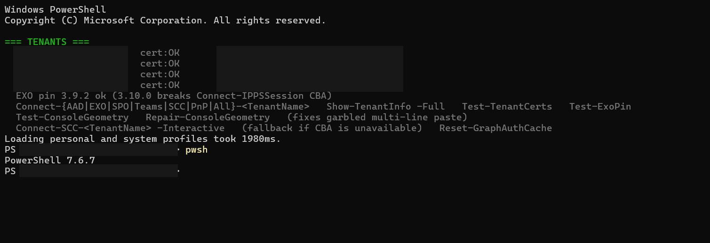
$zip = 'C:\path\to\Copilot-CoE-Implementation-Kit.zip'
$expectedHash = '<SHA256 from the release receipt>'
$installRoot = 'C:\CoE-Install\DemoOrg'
$kitRoot = Join-Path $installRoot '03_Build\CopilotCoE-Kit'
$orgPath = 'C:\CoE-Orgs\DemoOrg'
$profileSource = Join-Path $kitRoot 'Org-Template' # Higher education
# State/local government: $profileSource = Join-Path $kitRoot 'ContentPacks\Government-StateLocal'
if ((Get-FileHash -LiteralPath $zip -Algorithm SHA256).Hash -ne $expectedHash) {
throw 'The chosen release ZIP does not match its receipt.'
}
Expand-Archive -LiteralPath $zip -DestinationPath $installRoot
Copy-Item $profileSource $orgPath -Recurse
Which GitHub ZIP can I install?
Use a prebuilt release asset only when the GitHub release explicitly lists a file named
Copilot-CoE-Implementation-Kit.zip and its published receipt or release notes give the SHA256
you verify above. If that asset is present and the hash matches, it is valid installation media.
Do not substitute GitHub's generated source archives: Source code (zip), Source code (tar.gz), or the repository's Code > Download ZIP. Those files are source snapshots, not the frozen implementation package.
04Configure identity, security, and environment
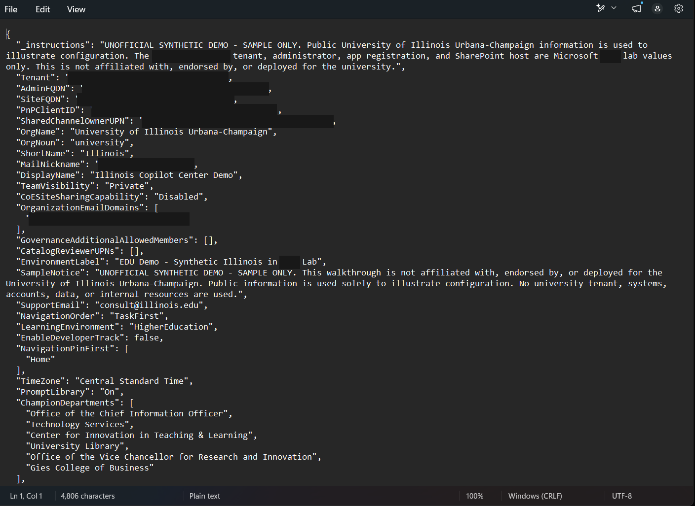
Open $orgPath\Deployment-Settings.json. This is the organization copy created in step 03; do not
edit the generic file under $kitRoot or $kitRoot\Org-Template.
| JSON field | Value to enter | Where it comes from |
|---|---|---|
Tenant | yourtenant.onmicrosoft.com | The tenant's primary .onmicrosoft.com domain. |
AdminFQDN | yourtenant-admin.sharepoint.com | The SharePoint admin-center host, without https:// or a path. |
SiteFQDN | yourtenant.sharepoint.com | The SharePoint content host, without https:// or a path. |
PnPClientID | Blank for the tenant's first kit registration | Step 06 writes the new tenant-owned app ID. Never carry a client ID into another tenant. |
SharedChannelOwnerUPN | coe-owner@your-domain | An existing in-tenant Member account approved to own the restricted governance channels. |
OrgName, OrgNoun, ShortName | The approved full name, reader-facing noun, and abbreviation | Examples: Contoso County, county, CC. |
MailNickname | A unique Microsoft 365 group alias | This value chooses the Team alias and SharePoint site path. Changing only $siteUrl does not change the installation target. |
DisplayName | The approved Team and hub title | Reader-facing; do not put lab wording in a customer profile. |
TeamVisibility | Private | Required by the installer. |
CoESiteSharingCapability | Disabled | Customer default. External preview is a separate, approved lab decision. |
OrganizationEmailDomains | Approved UPN domains for this tenant | Used to flag out-of-domain Team members; do not copy domains from another deployment. |
GovernanceAdditionalAllowedMembers | Approved in-tenant UPNs, or [] | Additional people allowed in the restricted governance shared channels. |
CatalogReviewerUPNs | Approved in-tenant reviewer UPNs, or [] | Reviewers receive the catalog approval role; no guests are invited. |
EnvironmentLabel | Production, Pilot, or another approved label | Reader-facing environment name. |
SampleNotice | none for approved Customer content | Use a visible disclaimer for Demo mode. Blank does not mean no notice; none does. |
SupportEmail | An approved, monitored mailbox | Used by generated support mail links. A public contact is not automatically an approved support route. |
LearningEnvironment | HigherEducation or Government | Selects the supported learning and tool experience. |
GuidesIntro, StoryAudiences, ScenarioLibraryUrl | Use the values supplied by the selected content pack, then review them | The Government pack supplies government audiences and scenario links; do not leave education defaults in a government profile. |
TimeZone | A Windows time-zone ID | For example, Eastern Standard Time or Central Standard Time. |
If this is the tenant's first installation, leave PnPClientID blank for now. Step 06 registers
the provisioning app and saves its client ID. An additional organization profile in the same tenant may use
the client ID of a kit-created app that is already approved there. Do not reuse that ID across tenants.
For this higher-education walkthrough, set LearningEnvironment to
HigherEducation. State and local government administrators should copy
ContentPacks\Government-StateLocal in step 03 and retain its
LearningEnvironment: Government setting. Keep
TeamVisibility set to Private and CoESiteSharingCapability set to
Disabled, unless the organization has explicitly approved a different configuration.
Choose the alias carefully: it becomes the site path and must meet Microsoft 365 naming requirements. After saving the JSON, define the checker URL and content mode from the same values:
$settings = Get-Content (Join-Path $orgPath 'Deployment-Settings.json') -Raw | ConvertFrom-Json $siteUrl = "https://$($settings.SiteFQDN)/sites/$($settings.MailNickname)" $contentMode = 'Customer' # Use Demo only for a clearly labeled synthetic demonstration.
05Configure support, governance, and content
Continue editing $orgPath\Deployment-Settings.json. Use routes approved by the teams that own
them; do not infer internal mailboxes, ticket queues, or incident endpoints from a public website.
"Links": {
"ServiceDesk": "https://www.techservices.illinois.edu/get-help/it-service-desk/",
"TechnologyRequest": "https://help.uillinois.edu/TDClient/42/UIUC/Requests/ServiceCatalog",
"DataSafetyIncident": "https://www.cybersecurity.illinois.edu/cybersecurity/report-a-cybersecurity-incident/",
"AIGuidelines": "https://genai.illinois.edu/ethical-and-responsible-use-of-generative-ai/"
},
"GovernanceLinks": [
{ "label": "Ethical and responsible use of generative AI", "url": "https://genai.illinois.edu/ethical-and-responsible-use-of-generative-ai/" },
{ "label": "Data handling and intellectual property best practices", "url": "https://genai.illinois.edu/best-practice-data-handling-and-intellectual-property/" },
{ "label": "Microsoft Copilot Chat guidance", "url": "https://genai.illinois.edu/ai-apps-copilot-chat/" }
]
| Field | What it must contain |
|---|---|
SupportEmail | A monitored mailbox approved for the generated CoE support links. |
Links.ServiceDesk | The general IT support or service-center route. |
Links.TechnologyRequest | The approved service, software, or AI-technology request process. |
Links.DataSafetyIncident | The approved security or data-incident reporting route; keep it separate from ordinary feedback. |
Links.AIGuidelines | The organization's current AI or responsible-use guidance. |
Links.AboutOrg | The organization's official public page. |
Links.PromptLibrary, Links.LearningSystem | Optional approved existing destinations; blank is allowed. |
GovernanceLinks, TrainingLinks | Reviewed label-and-URL entries shown on generated pages. |
ChampionDepartments, Agents | Real approved units and agent entries. Remove template examples you are not adopting. |
Put organization text overrides under $orgPath\Content and approved hosted files under
$orgPath\Assets. Do not edit $kitRoot\SeedContent. Run the local structured-content
check before authentication:
Set-Location $kitRoot . .\Internal\ContentPreflight.ps1 Assert-CoEStructuredOrganizationContent -OrgPath $orgPath
06Install PnP.PowerShell and register the app
Set-Location $kitRoot $PSVersionTable.PSVersion Install-Module PnP.PowerShell -RequiredVersion 3.2.0 -Scope CurrentUser .\01_Register-CoEProvisioningApp.ps1 -OrgPath $orgPath -Interactive # Confirm script 01 saved a non-empty client ID before installation. (Get-Content (Join-Path $orgPath 'Deployment-Settings.json') -Raw | ConvertFrom-Json).PnPClientID
07Start the clean installation
Set-Location $kitRoot .\02_Install-CopilotCoE.ps1 ` -OrgPath $orgPath ` -ContentMode $contentMode ` -SeedDemoContent
-SeedDemoContent publishes the pages, catalogs, calendar, and governance content. Without it,
the installer creates only the Team and an empty SharePoint site.
The command above uses the $contentMode selected in step 04. Set it to Customer for
an approved customer deployment. This recorded lab used Demo to retain demonstration notices.
Review source files and existing site content yourself; changing the mode does not replace that review.
This is a clean install, so -ResumeExisting is not used. If an earlier attempt already created a
Team or site, investigate first. Then either resume that exact deployment or use
04_Remove-CopilotCoE.ps1 before starting again. Deleting only the SharePoint site leaves the Team
and Microsoft 365 group behind, so the next installation can conflict with them.
08Review the checks before creation
Organization folder: C:\CoE-Orgs\DemoOrg Using settings from C:\CoE-Orgs\DemoOrg\Deployment-Settings.json (command-line values override it). Connecting to the specified tenant administrator endpoint using Interactive sign-in. WARNING: The group naming policy could not be read (Insufficient privileges to complete the operation.). Read-only preflight passed. Creating the Private Illinois Copilot CoE Team and its SharePoint site. Title Url ----- --- Illinois Copilot Center Demo https://yourtenant.sharepoint.com/sites/CopilotCoEDemo Applying site sharing 'Disabled' (owners only) Disabling non-owner sharing
09Watch the content load
[11:19:04] START Success Stories catalog
[11:19:31] DONE Success Stories catalog - added 4, preserved 0
[11:19:31] START Learning Paths catalog
[11:20:31] DONE Learning Paths catalog - added 18, preserved 0
[11:20:31] START Agent Showcase catalog
[11:21:13] DONE Agent Showcase catalog - added 2, preserved 0
[11:21:13] START Prompt Library catalog
[11:21:49] Prompts added - 25 of 230
[11:22:36] Prompts added - 100 of 230
[11:23:40] Prompts added - 200 of 230
[11:24:17] DONE Prompt Library catalog - added 230, preserved 0
[11:24:18] START Home page and hub repair
[11:25:49] DONE Home page and hub repair
[11:26:10] START horizontal mega-menu navigation
[11:27:37] DONE horizontal mega-menu navigation - 6 top-level link(s)
10Confirm the installation finished
COE SECURITY POSTURE (live checks; not a substitute for your organization's security approval) Team visibility: Private [PASS] (required: Private) Parent site external sharing: OFF (Disabled) [PASS] Leadership Governance external sharing: OFF (Disabled) [PASS] Program Governance external sharing: OFF (Disabled) [PASS] Submitted the prepared welcome post to 'Share Your Prompt'. Verify it in Teams. Submitted the prepared welcome post to 'Ask Us Anything'. Verify it in Teams. Submitted the prepared welcome post to 'General'. Verify it in Teams. Next: verify the site with .\Test-CoEInstall.ps1 -OrgPath <your organization folder> -SiteUrl $siteUrl -ContentMode $contentMode 02_Install-CopilotCoE finished in 2143s (about 36 minutes).
11Run the read-only checker
.\Test-CoEInstall.ps1 `
-OrgPath $orgPath `
-SiteUrl $siteUrl `
-ContentMode $contentMode
Expected: ALL CHECKS PASSED (...), with every WARN reviewed manually.
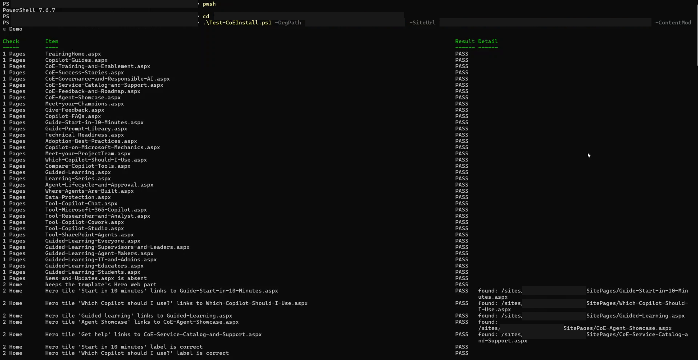
12Review SharePoint as an administrator
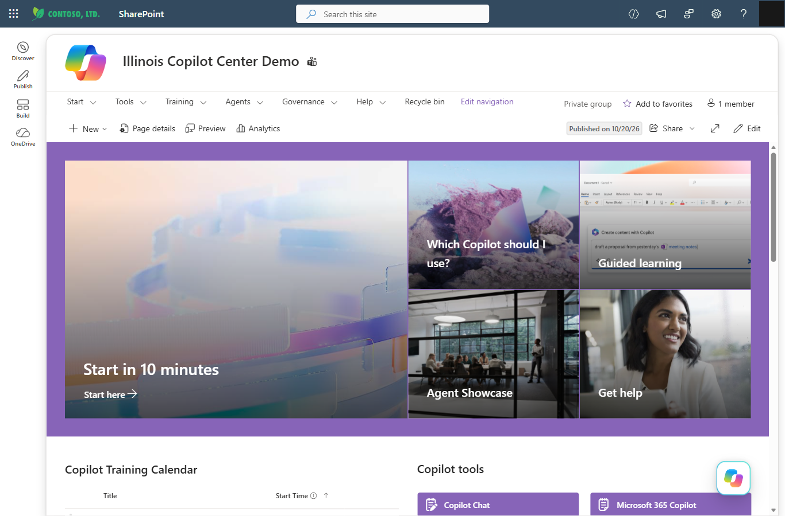
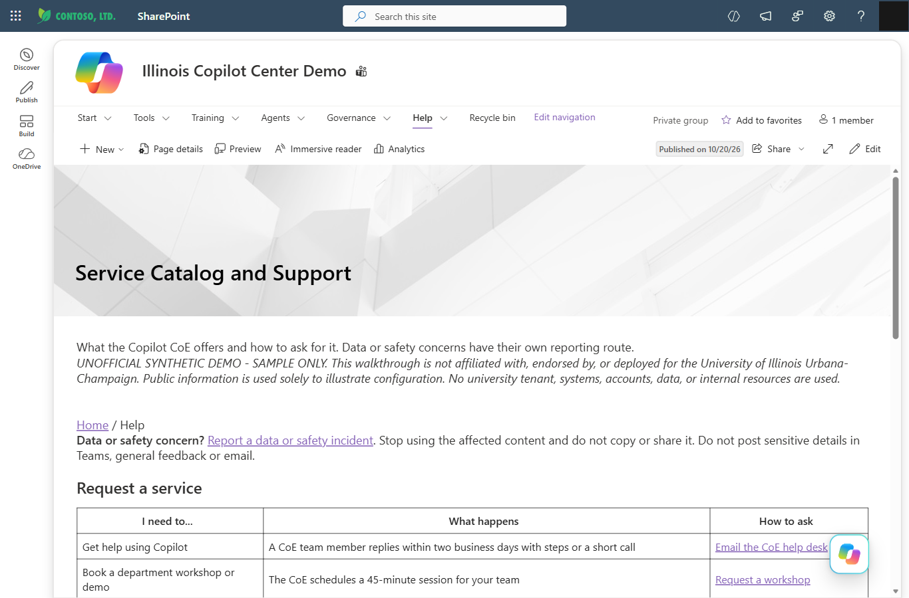
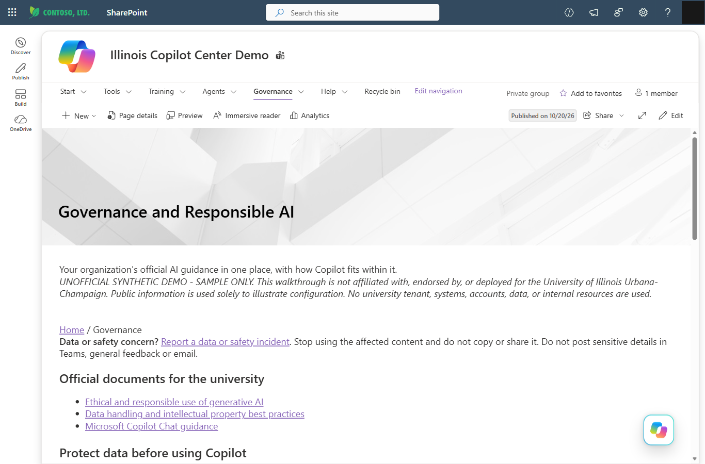
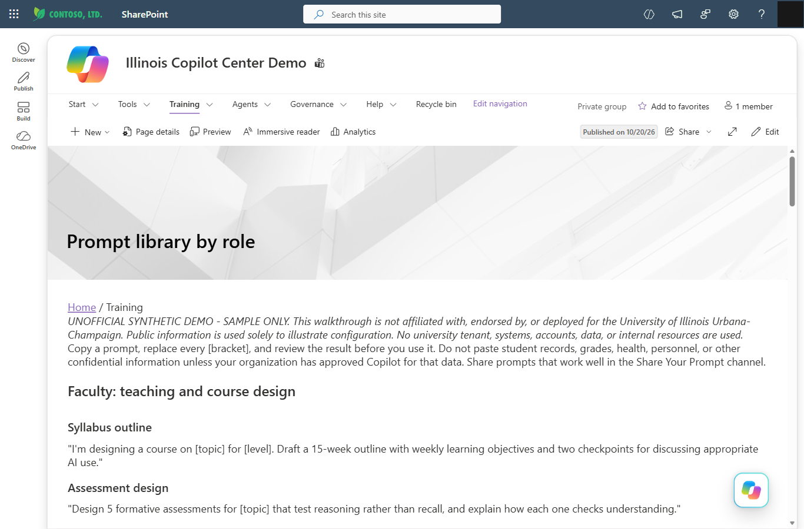
13Check the welcome messages manually
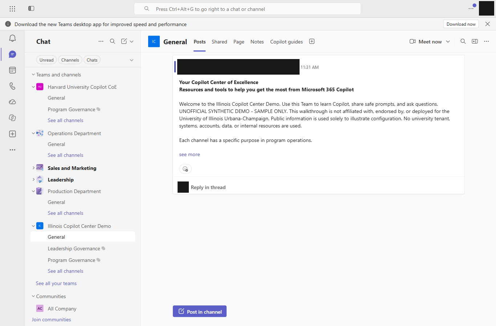
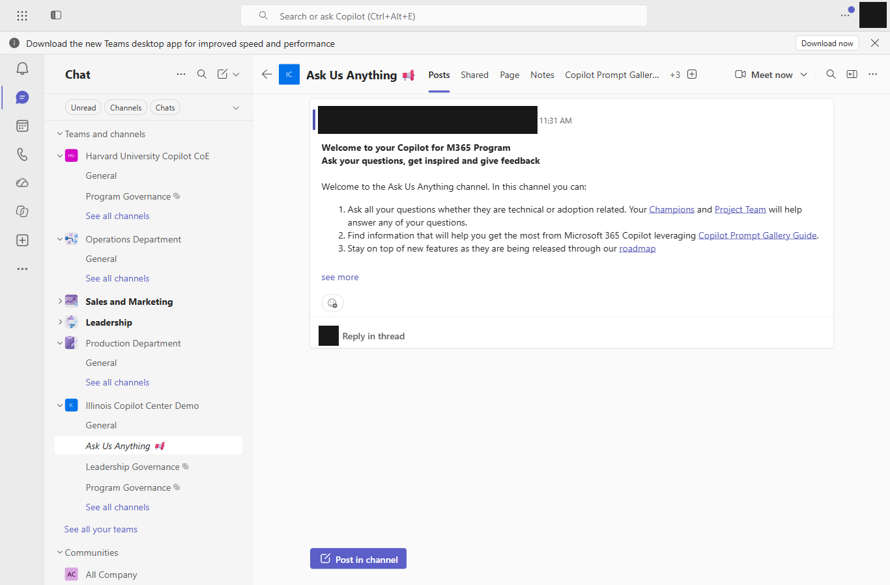
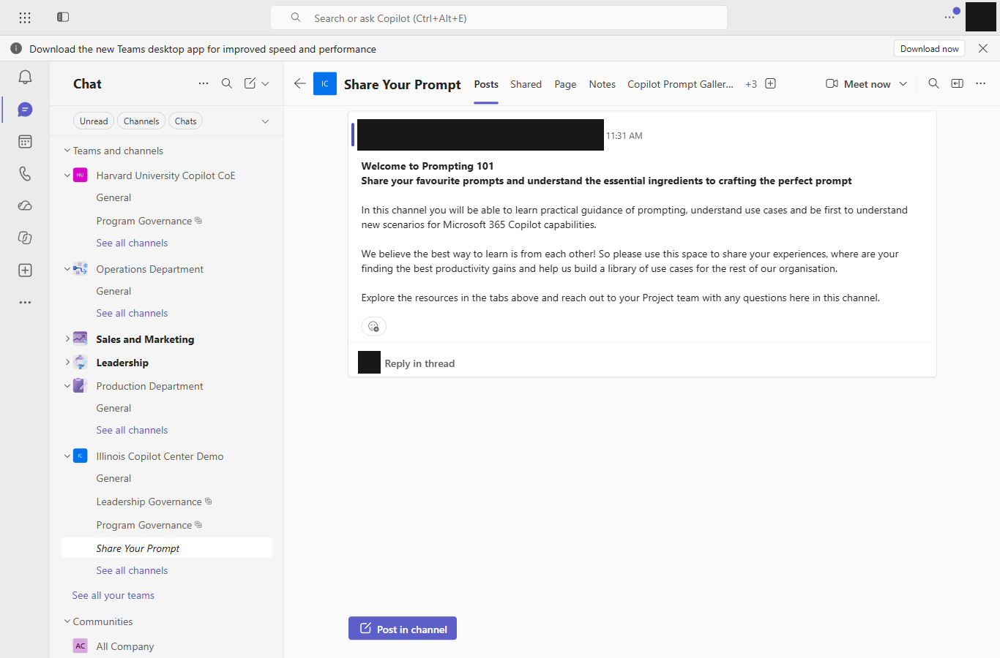
14Publish a reviewed content update
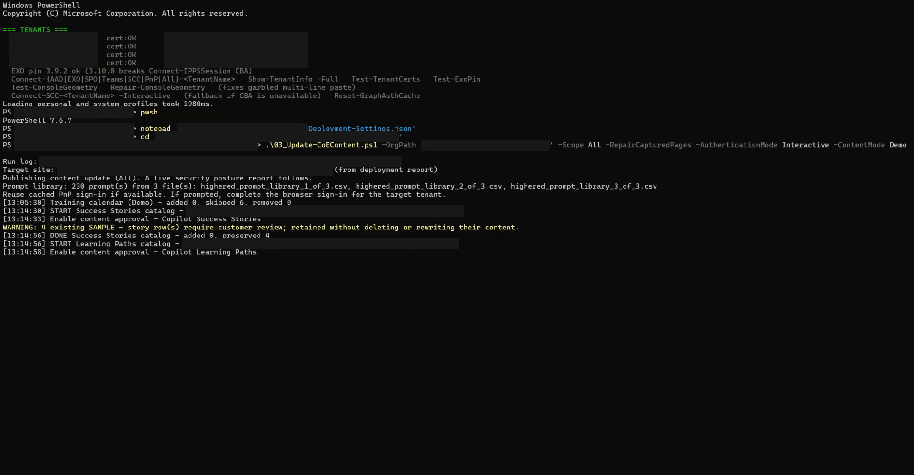
Use the update script to publish reviewed changes without rebuilding the Team.
This recording also includes -RepairCapturedPages because it demonstrates the repair process on a
fresh validation site. This switch rewrites the pages the kit manages. Edits you made to those pages in
SharePoint may be lost. Before using it on an existing site, review section D, “Home and the four captured
pages,” in 01_Admin-Quickstart.html. That section lists the page elements the switch resets. The
update script does not provide a -WhatIf preview.
.\03_Update-CoEContent.ps1 `
-OrgPath $orgPath `
-Scope All `
-RepairCapturedPages `
-AuthenticationMode Interactive `
-ContentMode $contentMode
15Check the site again after the update
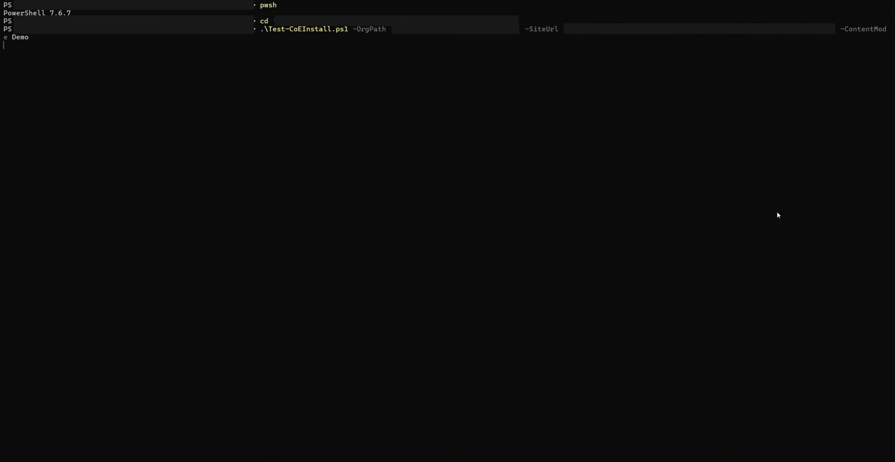
.\Test-CoEInstall.ps1 `
-OrgPath $orgPath `
-SiteUrl $siteUrl `
-ContentMode $contentMode
Expected: ALL CHECKS PASSED (...), with every WARN reviewed manually.
16Installation complete
The sample installation and update finished, and the automated checks passed. The administrator's SharePoint review and the Teams welcome-post review were completed. The group naming policy and reader-account review still require separate confirmation.
Keep the handoff records from step 15 together. For recovery or removal, use the administrator quickstart included with the same release.
What users get after installation
Explore the site's main areas
| Area | Purpose and review point |
|---|---|
| Home and Start in 10 minutes | Give users a first task and routes to learning, prompts, agents, and help. Confirm the first-use links work for a reader account. |
| Learning paths by role | Organize training resources and practice by role. The site does not track course completion; keep that in the organization's learning system. |
| Prompt library by role | Provide examples users can adapt to their work. Organization prompt CSV files can extend or replace supplied content; review those rows before deployment. |
| Agent Showcase | Help users find reviewed agents and understand their owner, data sources, and access requirements. Review submissions before approving them for publication. |
| Get help | Keep general help, service requests, and security or privacy incident reporting distinct. Use the organization's approved contact and submission routes. |
| Governance and Responsible AI | Provide guidance and example responsibilities. Replace sample classifications, risk models, and roles with approved organizational material. |
| Success Stories | Collect reviewed examples of useful work. Exclude sensitive or regulated information, obtain consent from people shown, and include captions for video. |
| Feedback and Roadmap | Connect product updates with local rollout plans and feedback. Clearly distinguish Microsoft's published roadmap from the organization's own commitments. |
Get the kit for this walkthrough
Use the reviewed release 3.8.21 implementation ZIP and its release receipt. The receipt identifies the
expected SHA256 hash: B31F641642BD2199C36C3F840F5A4878CEE8332E89B5C3AB4EC09FF72B264D6F.
A GitHub ZIP is valid only when it is a named prebuilt release asset, such as
Copilot-CoE-Implementation-Kit.zip, and its hash matches the release receipt. GitHub's automatic
Source code (zip), Source code (tar.gz), and repository Download ZIP are source
snapshots, not installation packages.
Release 3.8.21 currently publishes source and release notes but no binary asset. For this release, obtain the frozen implementation ZIP and receipt through the approved distribution channel. If a future release publishes the implementation ZIP as a GitHub release asset, download it there, verify its published hash, and use it in step 03.
Release 3.8.21 notes (source release; no binary asset) · Kit repository and documentation
Administrator FAQ
91 questions for the administrators who install, check, customize, and maintain the kit — the approved release and hash, roles and permissions, production-readiness checks, safe customization, and failure recovery, plus what installation creates in the tenant and what it deliberately leaves alone.
Addendum: sharing a CoE site with an external guest
A publicly accessible guide does not make the deployed SharePoint site public. The kit keeps the Team private and external site sharing disabled by default. Customer installations should retain those defaults; an approved lab preview for a named guest is a separate decision.